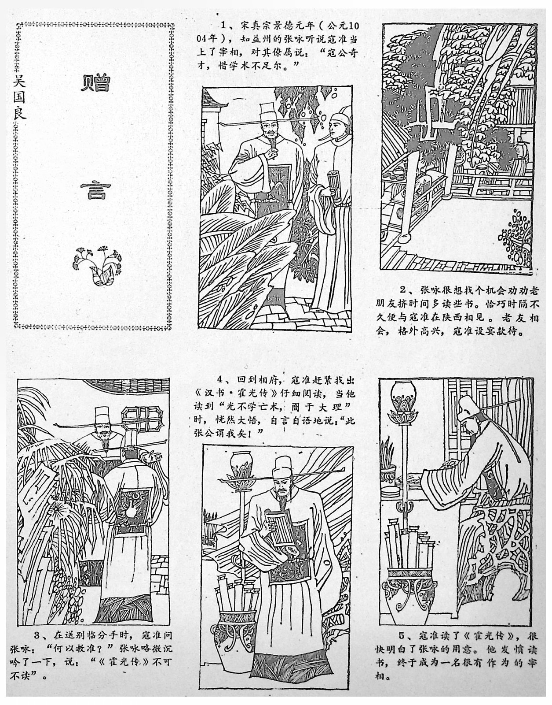

吴国良 《人事》1987年第11期（总第26期），封三
赠言
Parting Advice
- Panel text
- 1、宋真宗景德元年（公元1004年），知益州的张咏听说寇准当上了宰相，对其僚属说：“寇公奇才，惜学术不足尔。”
1. In the first year of the Jingde reign of Emperor Zhenzong of Song (1004), Zhang Yong, prefect of Yizhou, heard that Kou Zhun had become chief minister and said to his staff: “Lord Kou is a rare talent — a pity his learning falls short.” - 2、张咏很想找个机会劝劝老朋友挤时间多读些书。恰巧时隔不久便与寇准在陕西相见。老友相会，格外高兴，寇准设宴款待。
2. Zhang Yong wanted an opportunity to urge his old friend to find time to read more. As it happened, not long after he met Kou Zhun in Shaanxi. The old friends were delighted to meet, and Kou Zhun gave a banquet in his honour. - 3、在送别临分手时，寇准问张咏：“何以教准？”张咏略微沉吟了一下，说：“《霍光传》不可不读”。
3. As they parted, Kou Zhun asked Zhang Yong: “What advice have you for me?” Zhang Yong thought a moment and said: “The Biography of Huo Guang must not go unread.” - 4、回到相府，寇准赶紧找出《汉书·霍光传》仔细阅读，当他读到“光不学亡术，闇于大理”时，恍然大悟，自言自语地说：“此张公谓我矣！”
4. Back at his residence, Kou Zhun quickly found the Biography of Huo Guang in the Han shu and read it carefully. When he came to “Guang lacked learning and was without method, ignorant of the great principles,” he suddenly understood and said to himself: “This is what Lord Zhang meant about me!” - 5、寇准读了《霍光传》，很快明白了张咏的用意。他发愤读书，终于成为一名很有作为的宰相。
5. Having read the Biography of Huo Guang, Kou Zhun quickly understood Zhang Yong's intention. He threw himself into study and in the end became a chief minister of real accomplishment.
- 1、宋真宗景德元年（公元1004年），知益州的张咏听说寇准当上了宰相，对其僚属说：“寇公奇才，惜学术不足尔。”
- Description
- Five-panel picture story: Zhang Yong, hearing that his old friend Kou Zhun has become chief minister, remarks that Kou is brilliant but unlearned; when they part, Zhang tells him only that the biography of Huo Guang must be read. Kou reads it, takes the hint, and studies hard.
- Note
- Kou Zhun (961–1023) and Zhang Yong (946–1015) were Northern Song statesmen. Huo Guang was a powerful Han regent whom the Han shu faults for lacking learning. For 1987 readers the moral is that able cadres still need study.
- Artist
- Wu Guoliang 吴国良
- Published in
- 《人事》1987年第11期（总第26期）, inside back cover
- Themes
- Exemplary history · Talent and its neglect · Picture stories (连环画)

Cite
Wu Guoliang, “赠言” [Parting Advice], Renshi (Personnel) 《人事》, 1987, no. 11, inside back cover.